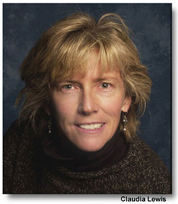

PERSONAL REFLECTIONS:
I have had real struggles in my life trying to balance family and career. During my career I learned that it was nearly impossible to locate my husband and myself, both highly specialized scientists, in one community. We also saw funding for the "hard sciences" shrink through the years compared to the situation we saw when we were selecting our specialties in graduate school. As a result, I found it necessary in my career to switch from a "hard science" career to a more applied science career, which was in health physics/radiation protection. As a result, I tend to encourage young women or men in science to select careers that will allow them to be more flexible in terms of where they can be employed. In my experience, it seems that the more plentiful jobs are in your chosen field and the more flexible you can be in terms of location of employment, the easier it is to coordinate your career with your partner’s. This permits a better balance between career and family. The bottom line, however, is to pursue what makes you happy–if your circumstances permit.
TRAINING AND EXPERIENCE:
My training and experience summarized are as follows. My Ph.D. degree is in Medical Physiology and Biophysics from Washington University, St. Louis. Throughout my career I have had considerable experience in research and teaching of medical students, nursing students, dental students, and finally LANL’s Radiation Workers. In addition, I conducted research using positron emitting radionuclides to measure regional blood flow and oxygen consumption in the heart. I function at LANL in the area of radiation protection/health physics and am in charge of Fetal Radiation Protection for pregnant workers at LANL for the last 8 years.
UPCOMING BOARD MEETINGS:
February 3, 2001 at Kelly Bitner’s in Albuquerque
April 7, 2001:at State Science Fair in Socorro
June ?, 2001 at Professional Development Seminar in Albuquerque
August 4, 2001 at J. Margo Clark’s in Santa Fe
October 19-21, 2001 at NMNWSE Annual Meeting in Albuquerque
Let’s all work together for an exciting and productive year!
See you in February.
Margo
Announcements corner
Taken from the LANL Newsbulletin on 12/4/200
Claudia Lewis (current NMNWSE elections chair and former treasurer, sic) awarded Fulbright grant for study in Spain
Claudia Lewis, a technical staff member in the Geology and Geochemistry (EES-1) group has been awarded a second Fulbright grant to continue her study of the structural geology and tectonics of a particular area of the Spanish Pyrenees.
The study will be done in collaboration with colleagues at Desert Research Institute and the Universidad de Zaragoza.
Lewis received a Fulbright Student Grant to study tectonic processes in the Pyrenees at the Universidad de Barcelona in 1994 -1995. The current project is an extension of that earlier project, addressing fundamental questions about how mountainous topography evolves following plate-tectonic and continental collisions. She is also studying how river systems respond to post-tectonic processes.

"The Spanish Pyrenees and the adjacent Ebro Basin comprise an outstanding locality for isolating processes that drive rock-uplift in mountain ranges created by plate tectonic collisions where active compression and crustal thickening have ceased," Lewis said. "The results of this project will form a foundation for many future studies of landscape evolution, soil forming processes, archaeology, and impacts of tectonics and climate change on the continents. The results will also be applicable to questions of landscape stability and potential contaminant transport at existing and proposed hazardous waste repositories, both in Spain and in the United States."
Lewis, who received her doctorate in geology from Harvard University, joined the Laboratory as a postdoctoral fellow in 1996. In addition to her ongoing work in Spain, she participates in the Laboratory's Seismic Hazards Program and various 3-D geological modeling efforts in the Española Basin and as far away as the Tibetan plateau. She also serves on the Laboratory's Women's Diversity Working Group and served this past year on the Fellows Selection Committee.
A strong proponent of women in science, Lewis herself was discouraged from pursuing a major in Geology as an undergraduate. She opted instead for American Studies.
"It wasn't until after college, when I was working at a small, independent wood energy research lab in Santa Fe that I discovered I could do science," she said. "I took evening courses in college algebra, calculus, physical geology and chemistry at Santa Fe Community College and UNM-Los Alamos. After that, I knew I was ready to get the geology degree I always wanted."
Lewis, who is fluent in Spanish, will spend two months next spring and again in 2002 doing research at the Universidad de Zaragoza as a Fulbright Senior Scholar.
OCTOBER 2000 ANNUAL MEETING

October 21, 2000
The meeting was called to order by Carol at 9:20 a.m. The meeting was held in Ruidoso at the Swiss Chalet. Members and non-members in attendance introduced themselves and included: Claudia Lewis, Karen Saenz, Kelley Bitner, Mary Bochmann, Georgia Pedicini, Wyonna Turner, Nancy Stages Weinbrenner, J. Margo Clark, Ruth Trench, Mary Campbell, Nora Christianson, Carol LaDelfe, and Alexine Salazar.
October 1999 Minutes were reviewed and approved with one change: Add Claudia as a continuing Board member. Minutes were approved as corrected.
TREASURER
End-of-Year Budget Report. Claudia presented the FY99-2000 Financial Report. Ending balance as of 10/17/00 was $7,631.17 in checking and $7,571.91 in the Money Market account. Claudia also compiled a summary of donors. This year didn’t see a donation for Intel ($5,000 in 1998-99). Donor requirements require more detailed information on how monies are to be spent. Claudia pointed out that these connections with donors have been established and we need to continue those ties.
Kelley reported that Sandia Foundation contacted her because of the EYH advertisement in the Albuquerque Journal. She has written a proposal to receive monies for EYH.
Alexine gave Claudia a check for $5,683.59 from FEMA. Ann Mauzy submitted a reimbursement to FEMA for replacement cost of Career books and book bags lost in the Cerro Grande fire. Claudia will send Northern Chapter a check for the book bags. The Board and those present wish to thank Ann for her efforts in recovering these losses. A big hand of applause went out to Ann.
The treasurer’s books were audited by the following committee members: Georgia, Kelley and Wyonna.
Claudia indicated a correction to the Fundraising total of $4,500 should have been $4,000. With verbal correction by Claudia, the committee signed off on the audit. The final treasurer’s report was approved by members present.
Budget Proposal. Claudia submitted the 00-01 Budget Proposal for comment and approval. She noted the few overruns, in particular, changing the Science Fair from $750 to $500. There were numerous underruns. Those modified (increased) included changing EYH T-Shirts to Promotions from $500 to $2750, EYH Printing from $0 to $1500, Membership Mailing from $100 to $175, and adding Professional Development Seminar at $1500. A motion to accept the proposed budget as revised was passed.
STANDING COMMITTEE REPORTS
ANNUAL MEETING
Karen will present her final report on this year’s annual meeting at the October 21st Board meeting. The next annual meeting is tentatively scheduled for October 19-20, 2001 in Albuquerque. Mary Ann Jones of the Albuquerque Hispano Chamber of Commerce is providing (free) convention/meeting planner services. Refer to June 2000 minutes for more details.
ARCHIVES
Position open. Carol asked if Mary Campbell would fill this position and she agreed!
ELECTIONS
Write-in candidates for Treasurer were Tinka Gammel; for VP/President-Elect was Angelique Neuman; and for Members-at-Large were Dana Roberson and Ann Mauzy. All four accepted the nomination and postion. Re-elected were Wyonna Turner and Mary Lou Westrom.
MEMBERSHIP
We are down by 9 members from the same time last year. There are currently 77 professional members, 8 retiree members, and 12 student members for a total of 97 members. In addition to maintaining the membership database and publishing the annual membership directory, the brochure was revised to include a new logo and congratulatory cards were printed for the NMNWSE state science fair judges to use for women entrants.
NEWSLETTER
During FY 2000 a total of 5 Newsletters were issued. Two new added features included the Chat Corner and the Announcement’s Corner.
SCIENCE FAIR
No report from Mercedes. However, as a judge, Claudia gave a brief report. It was difficult to get judges. The few judges they did have covered the Physical Sciences. The Biological/Health Science coverage was poor. Claudia encouraged our supporting this more next year.
EXPANDING YOUR HORIZONS
State
There were four successful EYH conferences this past year: Los Alamos, Albuquerque, Las Cruces, and Silver City. The final evaluations for the Los Alamos, Las Cruces and Silver City conferences were sent to the Math & Science Network.
Los Alamos EYH
A written report is on file for Los Alamos’ EYH. Next year’s EYH is scheduled for March 28, 2001.
Las Cruces EYH
The Chapter EYH was held 23 March 2000 at White Sands Missile Range with a total of 180 students and 25 adults. We kept the same format as in the years past with each student attending 4 workshops. We had the EYH in conjunction with Women’s History Month here at WSMR. Again, the EYH was very successful.
Silver City
We’re working on a better recruitment. We planned for more kids than showed up at this year’s EYH.
CHAPTER REPORTS
Northern
Angelique submitted a proxy report from Chapter President Janie Enter, Janie’s Recollection of Highlight of the 2000 Steering Committee. Main points included judging local Science Fairs, highlighting their monthly Lunchtime Talks, participation in AAUW’s Careers and Curiosity, and, of course, their successful EYH.
Las Cruces
The chapter was inactive throughout the year except to again sponsor a Girl State Delegate. No plans have been made to sponsor an EYH for next spring. No volunteers have come forward to hold the offices, though Karen Saenz continues to be the point-of-contact for all chapter business.
OLD BUSINESS
-
Career Booklets
We need to contact Ann Mauzy to reorder more books for this next year.
-
Host for FY 2001 Annual Meeting
Central Chapter
Tentatively scheduled for October 19-20, 2001 in Albuquerque. Mary Ann Jones of the Albuquerque Hispano Chamber of Commerce is helping with the planning logistics (catering, location, hotel accommodations, etc).
NEW BUSINESS
-
Claudia volunteered to be a member-at-large. Nancy will check the by-laws.
Meeting was adjourned at 10:15 am.
OCTOBER 2000 BOARD MEETING
October 22, 2000
The meeting was held at the Swiss Chalet in Ruidoso the day after the Annual Meeting. Board members in attendance were: J. Margo Clark, Claudia Lewis, Alexine Salazar, Carol LaDelfe, Karen Saenz, Wyonna Turner, and Angelique Neuman.
CALL TO ORDER: 8:14 a.m.
APPROVAL OF MINUTES: The September board meeting minutes were approved as corrected.
TREASURER
Claudia reported at outgoing Treasurer in Tinka’s absence, using the last quarter of the annual report for her report. There was very little activity, mostly travel reimbursement for the Board. The final modified budget will be used once Claudia submits.
STANDING COMMITTEE REPORTS
ANNUAL MEETING
No final statement on cost for this meeting. A final report will be presented at our December meeting. The Central Chapter (Kelly Bitner) will be hosting our next annual meeting, tentatively scheduled for October 19-20, 2001 in Albuquerque. Mary Ann Jones of the Albuquerque Hispano Chamber of Commerce will be our conference planner.
There was some discussion regarding the planning of this year’s annual meeting. It was difficult getting people to help with the preparations. In particular, it was difficult getting restaurants to respond or return phone inquiries. Better publicity was obviously needed based on the low attendance of membership. It was suggested to put together a notebook on the Annual Meeting Conference. Karen and Wyonna volunteered to put one together by the December meeting. They will get feedback from previous annual meeting chairs. This will hopefully result in better communication between all planners and the Board.
ARCHIVES
Mary Campbell was appointed on 10/21 to complete the term (one more year) for Angela Ferrara. Mary attended the annual meeting but was unable to attend this board meeting.
ELECTIONS
Claudia filled position as Nancy has gone off the Board. An elections report was submitted for Nancy by Claudia with the results of the FY2001 Elections. A total of 15 ballots from the membership were received. Members Nancy Stages Weinbrenner and Karen J. Saenz counted the results. Write-in votes were received for Treasurer and Member-at-Large. The following positions have been filled by election of the membership:
-
Vice President/President Elect Claudia Lewis*
-
Treasurer J. Tinka Gammel
-
Member-at Large Mary Lou Westrom
-
Member-at Large Wyonna Turner
-
Member-at Large Dana Roberson
-
Member-at Large Ann Mauzy
*Due to an error on the ballots Claudia was mistakenly included as Vice President/President Elect. She can’t accept the position since she will be out of the country for part of the year. Angelique Neuman has graciously accepted this position.
FUNDRAISING
Mary Lou will continue in this position for another 2-year term. Margo will contact her to determine if she can get an email account for better communication with the rest of the Board. This will help with reporting requirements as well. Carol (past President) received a letter from Mary Lou requesting bios from Board for a letter to Honeywell. She needed this information by October 15 but Carol received the letter too late to respond.
MEMBERSHIP
Margo appointed Wyonna who agreed for a one-year term. Wyonna will spend next year setting up documentation (a user’s manual of sorts) for the membership database she has developed.
NEWSLETTER
Angelique reported as outgoing Newsletter chair. No Newsletter was issued in September because she was unable to obtain a copy of the meeting minutes on time. She didn’t attend the August meeting, so without the minutes and lack of a Chat Corner Candidate she decided (with Carol’s concurrence) not to issue a September Newsletter.
Suggestions for this open position include Ann Mauzy. Margo will contact her. Angelique offered to do the November newsletter. Margo will submit for the Chat Corner plus a letter from the President. It was suggested to just include a summary of the (Board Meeting) minutes rather than the entire minutes.
POLICY AND PROCEDURES
A few minor changes have been noted.
PUBLICITY
Kim Linder needs to be informed of the new logo changes which include Founded 1979 (Margo will call dede to confirm this date) and switch the purple atom with the yellow atom. Once modified, she can distribute electronically to all membership.
SCIENCE FAIR
Margo will contact Mercedes to determine if she is still willing to be in this position. All members-at-large must attend 50% of all meetings to remain on the Board. Personal circumstances may have deterred Mercedes so Margo will inquire as to her willingness to continue. Margo will also ask Dana Roberson to chair (or possibly even co-chair depending on Mercedes response) this position. In which case, Mercedes would still continue as the Eastern Chapter representative, if she chooses.
EXPANDING YOUR HORIZONS
State
It is time to pay our agency fee to the Math/Science Network. The registration fee for 2-5 sites is $200. Claudia and/or Tinka will submit. This fee will get our NMNWSE agency one set of EYH organizational and conference material. If each of our sites wants their own set of material sent, an additional $30 per site is required. The following information is required to register each site: EYH Site Name/City, Conference Date, Site Contact Name, email address, mailing address, phone, city, state, zip code. As soon as we get this information to the Math/Science Network they will post it on their web site.
Karen has volunteered to set up the EYH insurance and will contact each chapter chair for required information.
Albuquerque EYH
Linda McCormick is chairing this year’s EYH planning committee, although she is not a network member. Angelique offered to contact Kelly to ask if Central Chapter could pay for an honorary membership to the network for Linda.
Los Alamos EYH
Dana Roberson is this year’s chair. We’re still looking for a co-chair.
Las Cruces EYH
No EYH is currently being planned.
Silver City
We are planning for an EYH conference in Silver City in 2001. The date hasn’t been set. However, I imagine it will be the last Saturday in February or the first Saturday in March. A planning committee will be getting together shortly. No additional details available as of yet.
CHAPTER REPORTS
Northern
Angelique submitted the Northern Chapter’s minutes of 10/5. She noted that a new representative from the Northern Chapter needs to be assigned by Northern. A suggestion of Mary Campbell was made.
OLD BUSINESS
-
Career Books
Claudia will contact Ann Mauzy to order books. A total of $1,500 + $5,000 (approx.) is available.
Again, major kudos to Ann for her quick and steadfast response in obtaining our reimbursement for lost career books in the fire. APPLAUSE!!!
-
Hosts for FY2001 Meetings
-
Dec. 2 Kim Linder — Cedar Crest
-
Feb. 3 Kelly Bitner - Albuquerque
-
Apr. 7 at State Science Fair in Socorro
-
June ? at Professional Development Seminar in Albuquerque
-
Aug. 4 J. Margo Clark — Santa Fe
-
Oct 19-21 at Annual Meeting
NEW BUSINESS
-
Mail
Karen has been receiving all the mail at the PO Box set up at Kirtland for the network. Judith Mead forwards the mail out to the appropriate person. Claudia will contact Judith to request all mail for Karen or Carol now be forwarded to Margo and all Treasurer mail be sent to Tinka (including membership stuff).
-
Recruiting Chair
Claudia suggested we consider setting up a recruiting chair, especially to attract students. She suggested surveying the entire membership on what they want from their member and their organization. Claudia volunteered to set up the survey and will get one of her students, Ann Lee, to assist here. A draft will be sent out to the Board for review.
The network basically does their EYH conferences in the spring, our new Professional Development Seminar in the summer, and our Annual Meeting in the fall. A suggestion was made to invite Science Fair winners to our Professional Development Seminar to give a poster session and attend the seminar.
-
Professional Development Seminar
-
Invite Science Fair winners to set up a poster session
-
Set up a Tutorial on "How to" session
-
Seminar suggested speaker is Kim Thomas
-
Exploring Management
Claudia will check with Ann Lee to do the recruiting.